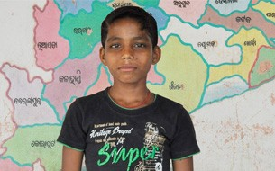

Category
NEWS
->Akshaya Patra is a model of cooperation and scale that you have accomplished and demonstrated. It is better than any other model in the world. US Congressman Joseph Kennedy , III (D-MA) of Massachusetts->Akshaya Patra's blue bus is a symbol of hope for the thousands of children across the country. The bus signifies that the child will not go hungry and we thought that the best way to be a part of this programme is by donating the vehicle. S R Bansal, Chairman and Managing Director Corporation Bank
Sucess Stories
We meet a very energetic and agile boy of ten at our visit to the Vijayanagar Project Primary School in Puri. His name is Jaga Pradhan and currently studying in fifth standard. He has an elder brother who works as a daily wager in industrial areas to support the family. Jaga also has one younger brother who is in the same school studying in third standard. His father passed away and the mother works as a low-wage construction worker. Of all the subjects taught in school, Jaga likes Science and Literature the most. As his house is quite close to the school, coming to school regularly is not an issue, and of course there is the mid-day meal served every day on time. Jaga’s face lights up when we talk sports. He tells us that his favourite is cricket and he is a huge fan of Mahendra Singh Dhoni. He supports his choice saying, “He is a master blaster and the captain of the Indian Cricket team.” Jaga enjoys playing cricket with his friends and prefers batting to bowling. He loves to watch live matches and the last match he saw is the T20 World Cup semi-final. Jaga Pradhan loves the mid-day meal provided by Akshaya Patra every day. Previously, due to financial constrains in the family, he’d sometimes go without food. Now, that is past. He gets proper food at school and he can take leftover to have at home. To rag him a bit playfully we told him that he looks fragile and feeble. He retorts immediately, “I’ve a lot of inner strength.” And we believe him.